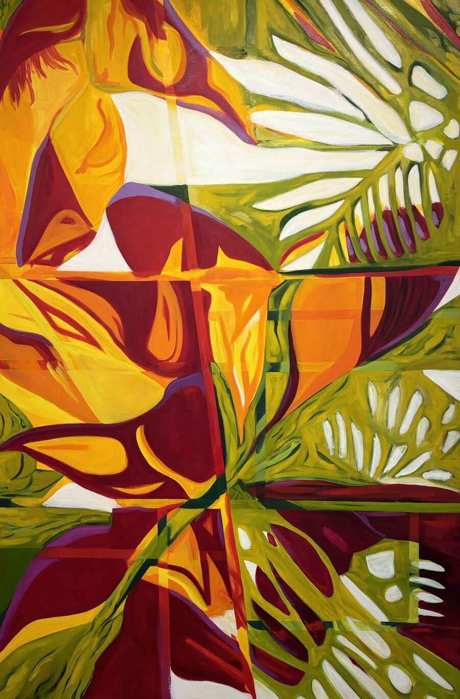
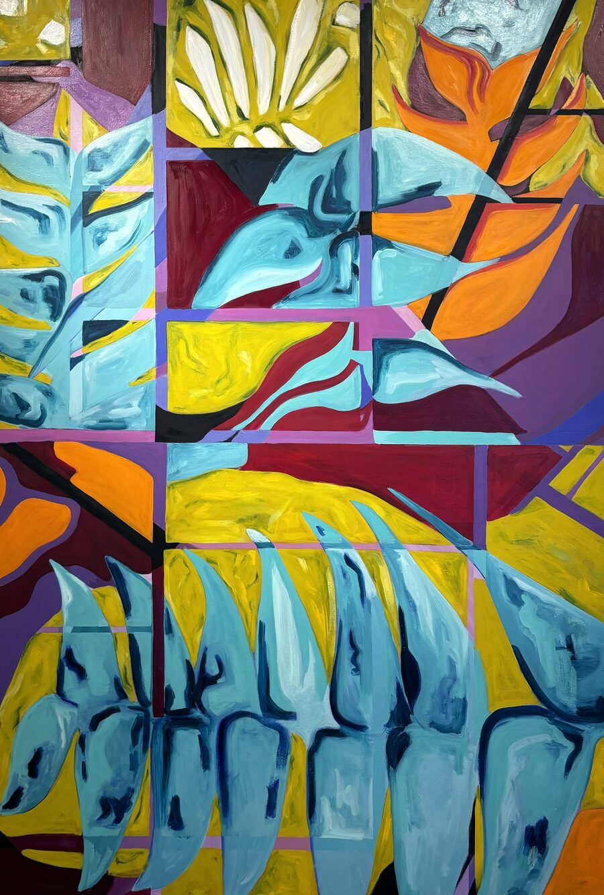
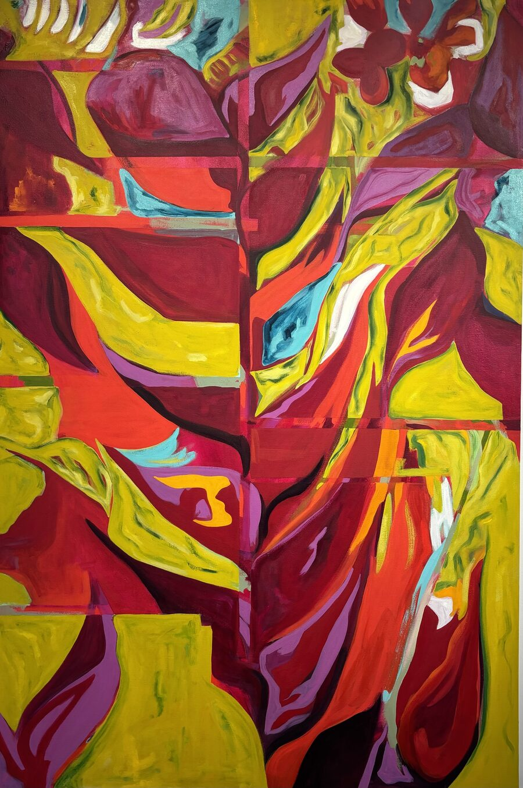
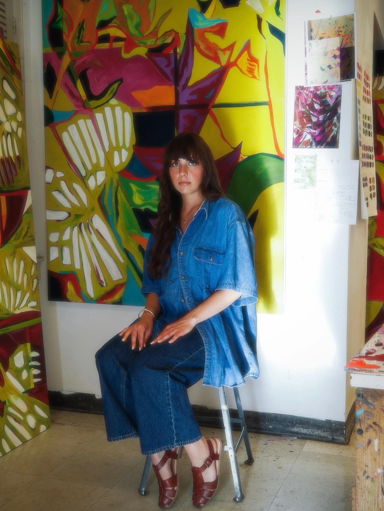
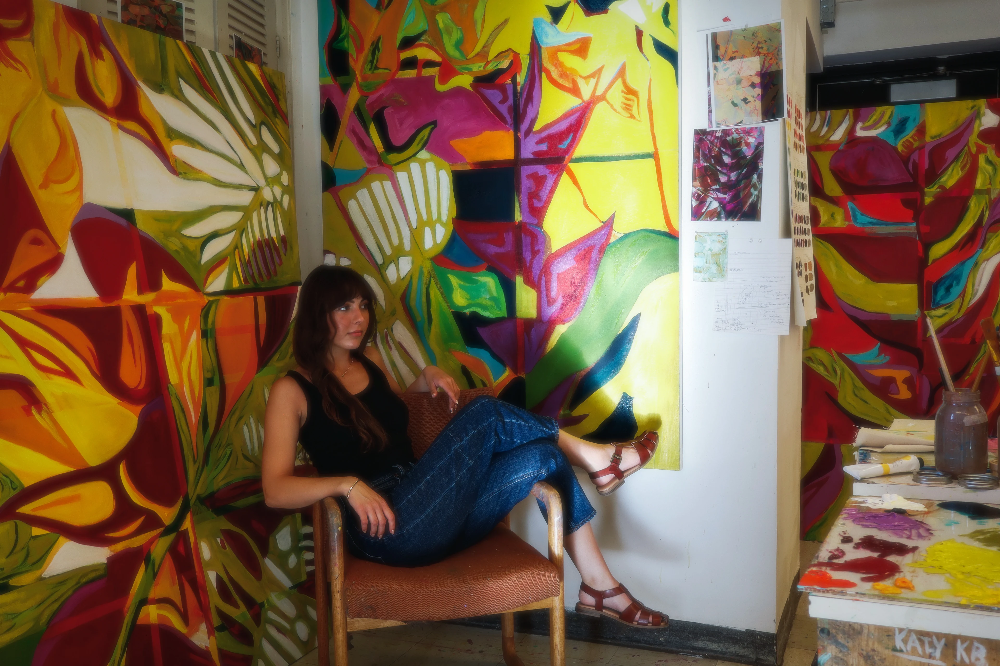

Mia Baker
Studio Artist
Terrarium
My series, Terrarium, explores the tension between humans and the environment through large, abstracted oil paintings. I spent the majority of my childhood growing up in Hawaii, learning about sustainable and indigenous farming methods that work in harmony with the land. When I moved to Oklahoma, I noticed a different cultural relationship to the environment. Here, and in much of the United States, nature is seen as a material to be used and controlled rather than something we belong to.
Visually, I am interested in the contrast between organic systems found naturally in the environment and man-made systems that make up our industrialized world. My work captures the tension between the two systems by depicting botanical forms being constrained and disrupted in some parts, and in other parts, pushing back.



Artist Statement
My series, Terrarium, describes the human impact on the environment, expressing how human systems are not compatible with the systems of nature. Growing up in Hawaii, I learned about indigenous and sustainable farming practices that worked in harmony with nature, prioritizing soil health and ecosystem diversity. I participated in reforestation and habitat conservation projects as a child. Native Hawaiians and other indigenous cultures believe that humans are a part of nature and that we need to take care of the environment because it is our home.
When I moved to the mainland, I noticed a different cultural perspective: the environment is viewed as material to be controlled rather than a place we inhabit. I have noticed that in Eurocentric cultures, our systems tend toward linear, grid-like structures, while nature tends to be chaotic and wild. For instance, industrial farming methods such as monoculture is structured in linear rows and lacks diversity causing problems with soil health and plant nutrition, requiring the need for pesticides and fertilizers that damage the ground further. We use linear systems when designing transportation grids that fragment the environment and lead to species endangerment and extinction.
My large oil paintings depict abstracted botanicals disrupted by lines and grids to symbolize how humans disrupt the environment. The specific plant I depict in each of my paintings is known as the Heliconia plant or Lobster Claw flower. This plant is found in Hawaii, however it is not native and was brought over by humans because of its decorative quality. I specifically use man-made devices to design my paintings, including cameras, Photoshop, and tape, to mimic how humans control the natural and organic image, reflecting what we do to the environment every day. I choose unnatural and artificial colors to comment on the synthetic, artificial surroundings that make up our contemporary world. I use a large scale for my paintings to draw the viewer in and help them understand the importance and the reality of environmental destruction.
I chose to title this series Terrarium because a terrarium is a contained version of nature–something living placed inside a controlled and artificial structure meant to simulate its original environment. I want the viewer to question their own relationship to the environment, and to think about the tension between what is already naturally there, and what we impose upon it. My goal as an artist is to inform people about how our current practices create more harm than good so we can find ways to improve how we interact with our environment.
About

Mia Baker is an artist who creates large oil paintings that examine how humans negatively disrupt the environment. Growing up in Hawaii, Baker learned how indigenous and sustainable farming practices worked in harmony with nature, prioritizing soil health and diversity within ecosystems.
After moving to Oklahoma, she noticed how our systems seem to contradict those of nature, creating an imbalance that causes issues such as global warming, soil erosion, pollution, and mass extinction. Western Eurocentric cultures tend to treat the environment as a material to be used and controlled rather than a place we inhabit and coexist.
Humans tend to use systems that are linear and controlled, while nature is the very opposite. Baker creates this tension within her work, showing how the gridded systems disrupt the organic, natural world.
Baker hopes to work as an illustrator for publishing companies and to create her own children's books. She grew up studying ballet and was planning to attend the University of Oklahoma for dance. When she was fifteen, she tore her meniscus and had to stop ballet completely. During her recovery she began drawing and painting and realized that she wanted to pursue art.

Curriculum Vitae
Download CVEducation
- 2026
- BFA Studio Art, Oklahoma State University, Stillwater, OK
- 2022
- Elgin High School, Elgin, OK
Awards / Grants
- 2026
- 45th Annual Student Juried Exhibition Departmental Award in Studio Art
- 2025
- Academic Excellence Award, Oklahoma State University, Stillwater, OK
Exhibitions
- 2026
- 45th Annual Student Juried Exhibition, Gardiner Gallery of Art, Stillwater, OK
- 2026
- Curious by Nature, Modella Art Gallery, Stillwater, OK
- 2026
- Color Outside the Lines, OSAS, Orange Wall, Oklahoma State University, Stillwater, OK
- 2026
- On the Rise, Blue Line Arts Gallery, Roseville, CA
- 2026
- Studio Capstone Exhibition, Gardiner Gallery of Art, Stillwater, OK
- 2025
- Heart Behind the Art, OSAS, Prairie Arts Center, Stillwater, OK
- 2025
- Sensory Overload, OSAS, Orange Wall, Oklahoma State University, Stillwater, OK
- 2025
- Innovating Prosperity, Innovation Foundation, Oklahoma State University, Stillwater, OK
- 2024
- Moments Magnified, OSU Microscopy, Oklahoma State University, Stillwater, OK
Curatorial Opportunities
- 2026
- Color Outside the Lines, Orange Wall, Oklahoma State University, Stillwater, OK
- 2025
- Heart Behind the Art, OSAS, Prairie Arts Center, Stillwater, OK
Presentations
- 2026
- Terrarium, Undergraduate Research Symposium, Oklahoma State University, Stillwater, OK
Community Events
- 2026
- Community Mural Project, Artist Society Collaboration with PAC, Stillwater, OK
- 2026
- Artist Society April Community Event, Stillwater, OK
- 2025
- Artist Society November Community Event, Stillwater, OK
- 2025
- Artist Society Homecoming Sign Painting, Stillwater, OK
- 2025
- Community Mural Project, Artist Society Collaboration with PAC, Stillwater, OK
- 2023
- Healthy Hippie Café, Medicine Park, OK
Professional Development
- 2026
- Critique with Cody Arnall, Stillwater, OK
- 2026
- Group Critique with Amanda Lee, Stillwater, OK
- 2026
- Critique with Jordan Ann Craig, Stillwater, OK
Professional Experience
- 2025–2026
- Public Relations Officer, Oklahoma State Artist Society, Oklahoma State University, Stillwater, OK
Contact
@mia.bake
Studio updates, process shots, and new work